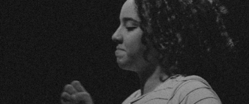
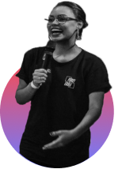

FIRE
FIRE

"Fire é o ministério de jovens da Igreja Batista Boas Novas, situada em Sinop - Mato Grosso, composto por jovens que querem transformar a sua realidade local através do Reino de Deus, manifestando o poder de Jesus com fome pela palavra e sede de novas profundidades no Espírito Santo, declarando que Cristo vive pela manifestação dos dons, sinais e a pregação do Evangelho de Jesus Cristo. "

Vitor e Suellen
Liderança Fire
"Para viver o grande sonho que Deus tem para sua vida há um processo a percorrer! Você está disposto a deixar tudo para ir em direção a plenitude da vontade do Pai?
Bruna Nobre
""Nós fomos adotados, e como filhos amados temos que dar prazer ao Pai, e isso é gerado através da nossa Obediência enquanto servos, que retribuem a confiança do Senhor."